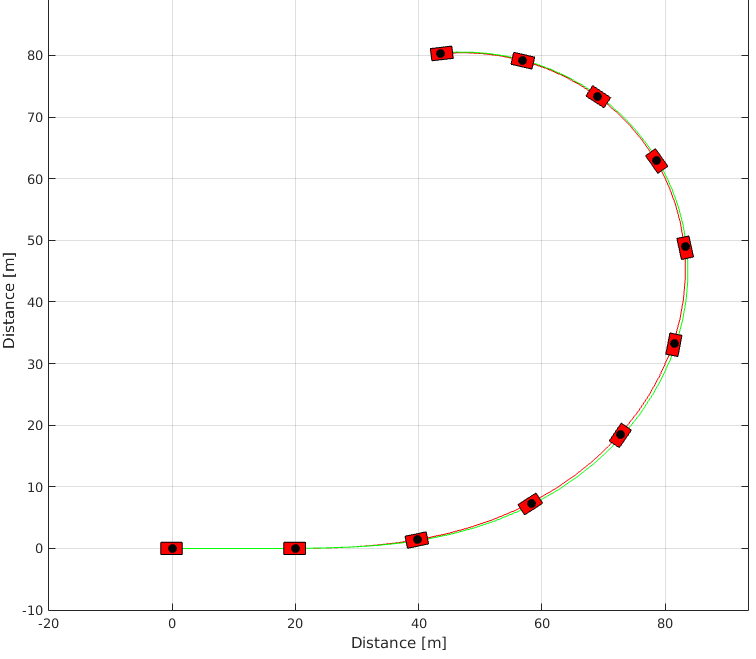
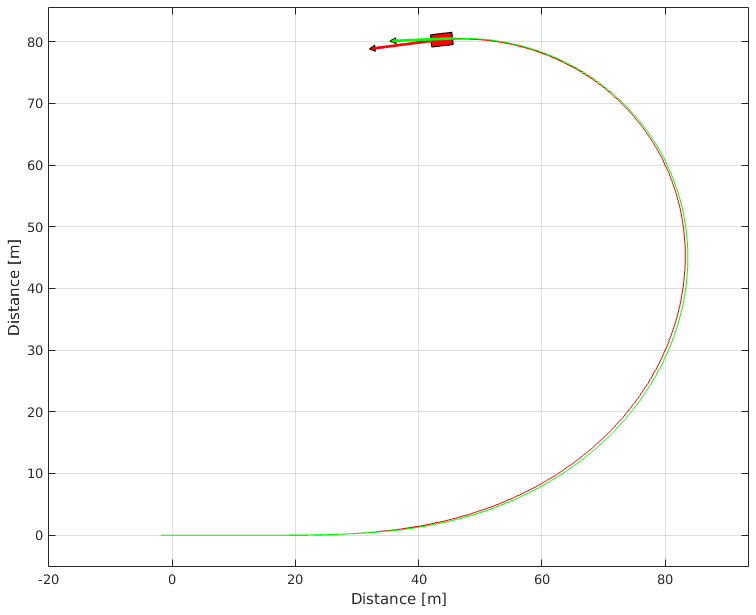
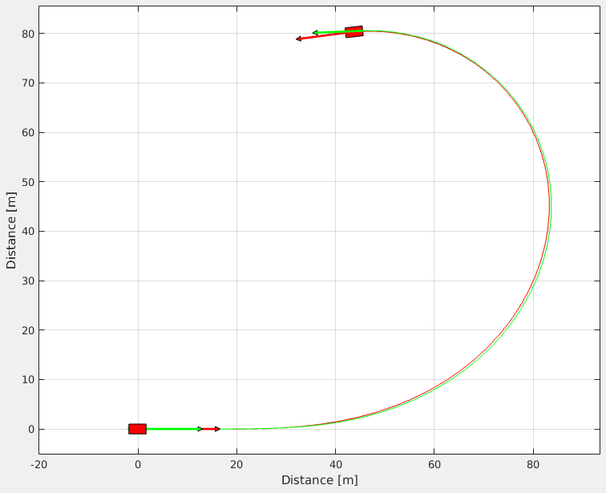

Template Simple Simulink
This template shows how to simulate a simple vehicle in Simulink using a s-function. The graphics are also plotted.
Contents
Simulink model
This model uses the s-function SimpleVehicleSFunction.m in Simulink. The package and this s-function must be in Matlab path.
The "SimpleVehicleSimulink.slx" available in the repository ("Examples/TemplateSimpleSimulink") is illustrated below:

It can be seen that the longitudinal forces of the tire are zero for the entire simulation. The steering angle recieve a step input.
Running the Simulink model
sim('SimpleVehicleSimulink');
Warning: Model 'SimpleVehicleSimulink' is using a default value of 0.2 for maximum step size. You can disable this diagnostic by setting 'Automatic solver parameter selection' diagnostic to 'none' in the Diagnostics page of the configuration parameters dialog
Each vehicle state variable goes to a scope. And the output of the model is saved in workspace.
Generating Graphics
To generate the graphics the same model used in SimpleVehicleSFunction.m must be defined.
% Choosing tire model TireModel = VehicleDynamicsLateral.TirePacejka(); % Defining tire parameters TireModel.a0 = 1; TireModel.a1 = 0; TireModel.a2 = 800; TireModel.a3 = 3000; TireModel.a4 = 50; TireModel.a5 = 0; TireModel.a6 = 0; TireModel.a7 = -1; TireModel.a8 = 0; TireModel.a9 = 0; TireModel.a10 = 0; TireModel.a11 = 0; TireModel.a12 = 0; TireModel.a13 = 0; % Choosing vehicle model VehicleModel = VehicleDynamicsLateral.VehicleSimpleNonlinear(); % Defining vehicle parameters VehicleModel.mF0 = 700; VehicleModel.mR0 = 600; VehicleModel.IT = 10000; VehicleModel.lT = 3.5; VehicleModel.nF = 2; VehicleModel.nR = 2; VehicleModel.wT = 2; VehicleModel.muy = .8; VehicleModel.tire = TireModel; simulator = VehicleDynamicsLateral.Simulator(VehicleModel, tout); % Retrieving states from Simulink model simulator.XT = simout.Data(:,1); simulator.YT = simout.Data(:,2); simulator.PSI = simout.Data(:,3); simulator.VEL = simout.Data(:,4); simulator.ALPHAT = simout.Data(:,5); simulator.dPSI = simout.Data(:,6); g = VehicleDynamicsLateral.Graphics(simulator); g.TractorColor = 'r'; g.Frame(); g.Animation(); 
As expected the vehicle starts traveling in a straight line and starts a turn at \(t = 1 \, s\) because of the step function.

See Also
Home | SimpleVehicleSFunction.m | Template Articulated Simulink